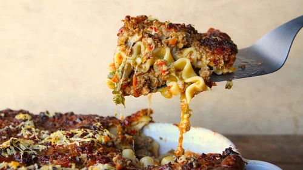

Lasagna

Matty Matheson's Beef Lasagna
Matty Mathson is a Canadian chef from Toronto who is redefining popular cuisine and celebrity chef-dom for a generation of
Americans, Canadians, and now Britons.
If you watch his cooking shows you'll get a sense for how he's
breaking about every norm there is when it comes to presenting food. You might also notice that he's a fan of american cheese, parsely stems,
and other down-to-earth ingredients and methods that appeal to both your pragmatic and unfeigned sides. He has the professional
pedigree to back up his recipes, but ignore that and try them if you want to understand the Matheson approach.
His lasagna is "guaranteed to get you laid," and "if you don't like lasagna, you're probably an idiot." The ingredients are straight-forward
and in quantity. As written, he has you working with 4lbs of beef and 3lbs of mozzarella. There's nothing terribly fancy in terms of techniques
here, but remember he's a professional chef; don't blame him if you can't use his heat levels, follow his order of operations and still not burn
anything.
Ingredients:
- 1/2 cup canola oil
- 4lbs ground beef
- 1 cup "good" olive oil
- 1 head of garlic
- 1 carrot
- 1 large onion
- 1/4 cup tomato paste
- 3 tbsp dried red chillies
- 4 1/4 cups beef stock
- 2 cups whole milk
- 4 large egg yolks
- 1 bunch flat-leaf parsley
- 1 box of oven ready lasagna noodles
- 3lbs shredded mozzarella
- 8 3/4 oz wedge of Parmesan cheese
Directions
- Set stove top to high heat. In a large, deep cast iron or enamel pot (like a Le Creuset), pour canola oil to cover the bottom of the pot.
Add the ground beef. Once the bottom is browned, continue stirring until all beef is brown— not grey—and is boiling.
- While the beef is browning, dice the garlic into a mince. Add a pinch of salt and rub your knife against it to break it down into a paste.
Grate the carrot. Chop the onion into a small dice. Add the olive oil into a saucepan and sauté vegetables over medium heat until you
see some caramelization (brown, but not dark brown). Once that happens, add the tomato paste and cook for another five minutes to get
that raw tomato taste out of there.
- Combine veggies and tomato paste to the beef. Stir and combine to make a beautiful mix. At this point, add the chili flakes and beef stock.
Bring to a boil and reduce to let every thing come together. This should take 15 minutes. Stir every 3-5 minutes so nothing burns.
- Once the stock has reduced down (you're looking for a thick sauce), add half of the milk. Reduce it down, then add the rest of the milk
and reduce. Take off the heat and add the three egg yolks. Stir that in and let it emulsify into the meat. Taste for salt and pepper and
adjust as necessary.
- Dice the parsley. Now it's time to assemble the lasagna. Heat the oven to 350° F.
- Ladle the meat sauce onto the bottom of your casserole dish, then lay down noodles, then another layer of meat sauce, then layer your cheese,
then noodle and so on until your dish is full. Add chopped parsley to the middle layer and add grated parm on the top layer.
- Place casserole dish on a baking tray so no cheese drips over the sides and burns the bottom of the oven. Cook until golden brown on top
(30-35 minutes).
- Once its golden brown, bring it to your counter and let rest for 15 minutes. Cut into squares and serve with a salad or something that
will cut this meat and cheese party.
These directions and ingredients have been unceremoniously ripped from here.